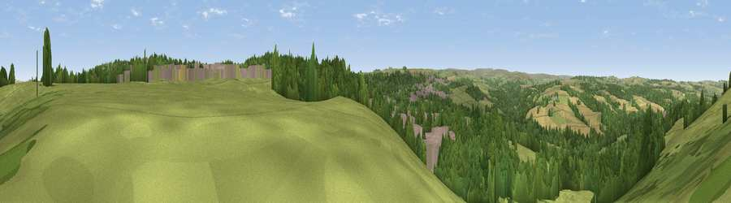

Viewpoint near Consett
#24715 in England · top 57% of its area beats it · near Consett · access?Where it is
The exact computed spot (NZ 09475 50725). Click the marker for map links.
Public access: no public right of way or access land is recorded at this exact spot — it may be on private land. Computed from Natural England's CRoW access layer and OpenStreetMap rights of way — not the legal definitive map. Always verify locally.
The view, rendered

A 360° render of this exact spot computed from the terrain model, tree cover and land cover — summer colours, afternoon light, calibrated against photographs of famous viewpoints. Real trees, hedges and buildings will differ in detail.
The panorama
Grey silhouette: terrain skyline in each direction (720 bearings, Earth curvature and refraction included). Dashed green: skyline with trees (+15 m) and buildings (+8 m) as obstacles. Blue strip: how far the ground is visible on each bearing.
Where the view opens
Wedge length = distance to the farthest visible ground on that bearing (vegetation-aware). Rings at 10, 25 and 50 km.
What fills the view
41% woodland · 41% grassland · 10% cropland · 8% built-up
Angular shares of the visible panorama (visual magnitude), not map area. Landscape diversity 0.51 (0–1 Shannon).
Key numbers
More beautiful places nearby
The staircase of upgrades: each row has a higher view potential than everything closer. Driving times are estimates from straight-line distance, calibrated against real road routing — check an actual route before setting out.
| Place | Direction | Drive | Score |
|---|---|---|---|
| Viewpoint near Consett | N · 0 km | ~1 min | 50.5 |
| Viewpoint near Benfieldside | NE · 2 km | ~6 min | 57.0 |
| Viewpoint near Medomsley | NE · 3 km | ~7 min | 60.7 |
| Pontop Pike | ENE · 6 km | ~13 min | 77.8 |
| Little Dun Fell | WSW · 43 km | ~63 min | 78.4 |
| Cross Fell | WSW · 44 km | ~64 min | 78.7 |
| Viewpoint near Rothbury | N · 48 km | ~69 min | 81.1 |
| Dove Crag | N · 48 km | ~69 min | 82.3 |
54.85124, -1.85396 · source: screening · position refined by local search. Computed location — check access rights before visiting.